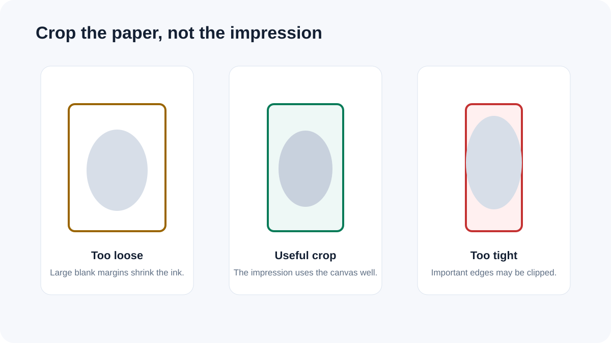

How to resize and compress a thumb impression for an online form
The receiving application is the authority on dimensions and file size. A reliable workflow trims unused paper first, sets the required canvas, chooses the accepted background and then checks the final bytes and pixels.
Use the exact rules from the form
There is no universal thumb-impression specification. Different applications can require different dimensions, maximum bytes, image formats and background rules. Do not treat the tool's starting square sizes as official requirements.
Trim the source before resizing

A scan or phone photo can include large areas of white paper. Trimming those margins first gives the actual impression more space inside the final canvas.
Background cleanup needs a visual check
Near-white removal can make a clean thumb impression easier to place on a form, but aggressive thresholds can remove faint ink or edge detail. Compare the prepared preview with the original before submitting.
Compress after the dimensions are correct
Set the destination dimensions first, then use the file-size limit. The target is a maximum goal; some images will reach it easily while others may need more aggressive quality or dimension reduction.
PNG, JPG or WebP?
JPG is compact and widely accepted for simple black-on-white impressions. PNG can preserve transparency and sharp edges. WebP can be smaller but should be used only when the receiving application accepts it.
Privacy
Thumb-impression images can contain biometric information. The FreePDF Tools workflow processes supported images locally in the browser rather than requiring an upload to a conversion server.